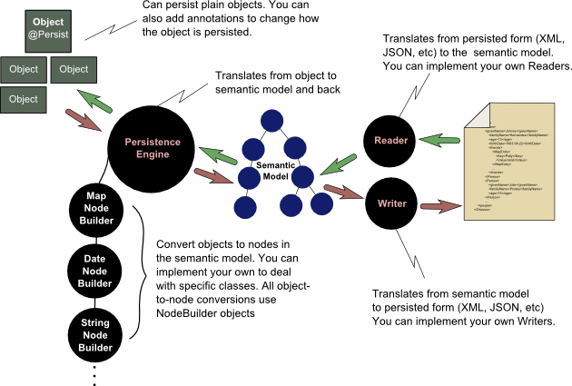

FreezeDry provides an easy mechanism for converting Java objects into a persisted form such as XML, JSON, or lists of key-value pairs. And then incredibly, from that persisted form, back into a Java object.

"Ok" you smile to yourself, "Yet another persistence framework. Why should I care? I'll just go back to drinking my beer!"
Well now. FreezeDry is really simple to use, right out of the box. Look. Here's how simple it is to persist an object to XML:
new XmlPersistence().write( division, "person.xml" );
And then to reconstitute the object from XML:
Division division = new XmlPersistence().read( Division.class, "person.xml" );
FreezeDry provides a few interesting and useful features. And, of course it isn't for everyone. Nope. It's not. But the thing works right out of the box. If you need to persist an object and you don't care too much how the XML, JSON, or key-values are formed, then you can persist the object in one line of code. And load it back with another line of code. That's it. It's just that simple. And if you need to customize the way the object is persisted, you can do that too. But instead of dealing with tedious XML binding files, you can make simple customizations with annotations, and more complex customizations through extension to the code. I mean, you are a developer, right, not a config file junkie. So FreezeDry let's you do what you love: write code!
To learn more about FreezeDry, its structure, how to modify the way objects are persisted, and what comes with the current version, please see the [Overview]